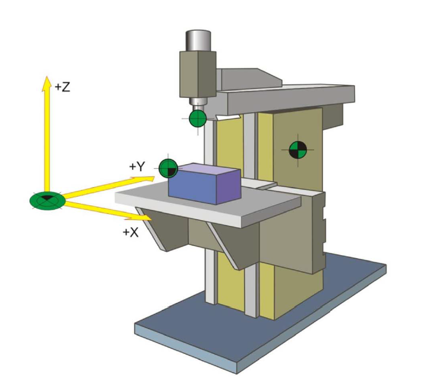

Установка и настройка Grbl
Навигация по проекту:
- Покупка и разбор фрезерного станка Cutmaster CM-1500
- Модернизация Cutmaster CM-1500
- Установка и настройка Grbl
- CNCjs + ESP-Link
- Grbl + ESC & Brushless motor
Почему Grbl?
В плане выбора прошивок я рассматривал легкие opensource проекты. А в качестве контроллера изначально тыкнул пальцем в Arduino Uno просто потому что это самое дешевое и простое решение. И я хочу доказать, что даже оно на голову круче чем вариант со старым компом с LPT портом, который использовался на моем станке раньше.
На 8-битный мк Atmega328p который используется в Arduino Uno самыми известными прошивками являются Marlin и Grbl. При этом Marlin давно разросся и начиная со второй версии уже не подходит на 8-битные мк. В тоже время Grbl поддерживается по сей день и является узким и производительным решением под 8-битный AVR контроллер.
Установка
Проект Grbl раньше распологался в репозитории github.com/grbl/grbl, но сейчас переехал в github.com/gnea/grbl. На сколько я понимаю, это обусловлено смещением фокуса на главный продукт – G-code парсер gnea.
Прошивку можно скачать из вкладки релизы в репозитории в виде hex-файла или собрать самому с помощью Makefile.
Для загрузки на мк необходимо воспользоваться утилитой avrdude (не обязательно скачивать Arduino IDE). Чтобы вручную не вводить аргументы можно воспользоваться Makefile находящимся в репозитории:
make flash
Данная команда исполняет следущую конструкцию:
avrdude -c avrisp2 -P usb -p atmega328p -B 10 -F -U flash:w:grbl.hex:i
При использовании этого метода необходим AVR программатор для загрузки прошивки по AVR ISP порту, это не всегда удобно ввиду отсуствия проргамматора. В этом случае можно воспользоваться предустановленным в Arduino загрузчиком. Загрузчик это специальная программа записанная в память мк (работает аналогично BIOS), однако её может и не быть. Для прошивки таким способом достаточно иметь USB провод и саму плату Arduino. Это также позволяет удобнее загрузить скаченный hex-файл:
avrdude -c arduino -p m328p -U flash:w:path/to/firmware.hex:i -P /dev/tty.usbserial-A804CL9D
Где path/to/firmware.hex – путь к файлу прошивки, а /dev/tty.usbserial-A804CL9D – serial порт подключенной Arduino.
Настройка Grbl
Итак, станок собран, контроллер подключен, прошивка залита. После подключения контроллера к компьютеру по USB и подключения к UART консоли, контроллер должен написать приветственную строку:
Grbl 1.1h ['$' for help]
Введите $ и нажмите Enter, чтобы Grbl вывел подсказку. На что Grbl должен вывести следующее:
[HLP:$$ $# $G $I $N $x=val $Nx=line $J=line $SLP $C $X $H ~ ! ? ctrl-x]
$-команды используются для просмотра или изменения параметров Grbl, а также запуска процедуры поиска начальной позиции.
Последние четыре команды (которые начинаются не со знака $) – это команды управления в реальном времени, которые могут быть отправлены в любой момент, независимо от того, что в настоящее время делает Grbl. Они либо тут же меняют поведение работающего Grbl или сразу же выводят важные в реальном времени данные, например текущие координаты (aka DRO).
Я пришел к выводу, что для настройки станка, нужно понимать каждый параметр, поэтому настройку станка вижу пошаговым изучением параметров и, в случае необходимости, их изменением.
Ниже я аккумулировал и причесал информацию о параметрах со следующих источников: portal-pk.ru, cnc-design.ru, r13-project.ru.
Параметры Grbl
Для просмотра параметров введите $$ и нажмите Enter. Grbl ответит списком текущих системных настроек. В примере ниже настройки по умолчанию.
$0=10 (Step pulse time, microseconds)
$1=25 (Step idle delay, milliseconds)
$2=0 (Step pulse invert, mask)
$3=0 (Step direction invert, mask)
$4=0 (Invert step enable pin, boolean)
$5=0 (Invert limit pins, boolean)
$6=0 (Invert probe pin, boolean)
$10=1 (Status report options, mask)
$11=0.010 (Junction deviation, millimeters)
$12=0.002 (Arc tolerance, millimeters)
$13=0 (Report in inches, boolean)
$20=0 (Soft limits enable, boolean)
$21=0 (Hard limits enable, boolean)
$22=0 (Homing cycle enable, boolean)
$23=0 (Homing direction invert, mask)
$24=25.000 (Homing locate feed rate, mm/min)
$25=500.000 (Homing search seek rate, mm/min)
$26=250 (Homing switch debounce delay, milliseconds)
$27=1.000 (Homing switch pull-off distance, millimeters)
$30=1000 (Maximum spindle speed, RPM)
$31=0 (Minimum spindle speed, RPM)
$32=0 (Laser-mode enable, boolean)
$100=250.000 (X-axis travel resolution, step/mm)
$101=250.000 (Y-axis travel resolution, step/mm)
$102=250.000 (Z-axis travel resolution, step/mm)
$110=500.000 (X-axis maximum rate, mm/min)
$111=500.000 (Y-axis maximum rate, mm/min)
$112=500.000 (Z-axis maximum rate, mm/min)
$120=10.000 (X-axis acceleration, mm/sec^2)
$121=10.000 (Y-axis acceleration, mm/sec^2)
$122=10.000 (Z-axis acceleration, mm/sec^2)
$130=200.000 (X-axis maximum travel, millimeters)
$131=200.000 (Y-axis maximum travel, millimeters)
$132=200.000 (Z-axis maximum travel, millimeters)
Все параметры хранятся в энергонезависимой памяти мк – EEPROM. Так что они будут автоматически загружены при следующем включении вашей платы Arduino.
$x=val описывает отдельный параметр настроек, причем val это значение параметра.
В предыдущих версиях Grbl каждый параметр имел после себя описание в круглых скобках. Но в Grbl, начиная с v1.1, этого, к сожалению, больше нет. Так было сделано, чтобы освободить flash-память для добавления новых возможностей, появившихся в v1.1. Однако, большинство хороших графических оболочек (GUI) добавляют для вас описания к параметрам, например используемая мной
CNCjs.
Для изменения параметра необходимо выполнить команду $x=val. Например, для изменения длины шагового импульса в микросекундах на значение 10мкс, нужно ввести $0=10, завершив команду нажатием клавищи Enter. Если все прошло успешно, Grbl ответит ‘ok’, новые настройки будут сохранены в EEPROM и будут использоваться вплоть до следующего их изменения.
Вы можете перепроверить, что Grbl получил и сохранил верное значение параметра, повторно введя команду $$ для просмотра параметров из памяти.
Описание параметров Grbl
Примечание! Разница между
Grbl v0.9иGrbl v1.1заключается только в том, что изменился вывод статуса командой$10и были добавлены команды для новых параметров$30/$31- максимальные/минимальные обороты шпинделя и$32- работа в режиме лазера. Все остальное - осталось без изменений.
$0 – Длительность шагового импульса, микросекунды
Драйверы шаговых двигателей имеют ограничение на минимальную длительность шагового импульса. Уточните необходимое значение можно в документации на драйвер или перебором различных вариантов. Необходимо подобрать максимально короткий импульс, которые драйвер способен надежно распознавать. Если импульсы будут слишком длинные, вы можете столкнуться с проблемами при высоких скоростях подачи и большой частоте импульсов, возникающими из-за того, что идущие подряд импульсы начнут перекрывать друг друга. Рекомендуется использовать длительности в районе 10 микросекунд, что является значением по-умолчанию.
$1 – Задержка отключения двигателей, миллисекунды
Параметр меняется от 0 до 255.
- 0 — напряжение снимается сразу;
- 255 — напряжение не снимается никогда.
Каждый раз, когда ваши шаговые двигатели заканчивают движение и останавливаются, Grbl делает задержку на указанный интервал времени перед отключением питания двигателей. Вы можете всегда держать двигатели включенными (с подачей питания для удержания текущего положения) установив значение этого параметра в максимально возможное значение, равное 255 миллисекунд.
Отключение призвано помочь для тех типов двигателей, которые не следует держать включенными в течении долгого периода времени без какой-либо работы. И еще, имейте в виду, что в процессе отключения некоторые драйверы шаговых двигателей не запоминают на каком микрошаге они остановились, из-за этого вы можете стать свидетелем пропуска шагов при отключении/включении двигателей. В этом случае просто держите двигатели всегда включенными, для этого выполните $1=255.
$2 – Инверсия порта шаговых испульсов, маска
Этот параметр управляет инверсией сигнала шаговых импульсов (вывод STEP). По-умолчанию, сигнал шагового импульса начинается в нормально-низком состоянии и переключается в высокое на период импульса. По истечении времени, заданного параметром $0, вывод переключается обратно в низкое состояние, вплоть до следующего испульса. В режиме инверсии, шаговый импульс переключается из нормально-высокого в низкое на период импульса, а потом возвращается обратно в высокое состояние. Большинству пользователей не требуется менять значение этого параметра, но это может оказаться полезным, если конкретные драйверы ШД этого требуют.
Данный параметр задается по следующей маске:
| Значение | Маска | Ось X | Ось Y | Ось Z |
|---|---|---|---|---|
| 0 | 000 | - | - | - |
| 1 | 001 | + | - | - |
| 2 | 010 | - | + | - |
| 3 | 011 | + | + | - |
| 4 | 100 | - | - | + |
| 5 | 101 | + | - | + |
| 6 | 110 | - | + | + |
| 7 | 111 | + | + | + |
$3 – Инверсия порта направления, маска
Этот параметр инвертирует сигнал направления для каждой из осей (вывод DIR). По-умолчанию, Grbl предполагает, что ось движется в положительном направлении, когда уровень сигнала направления низкий, и в отрицательном - когда высокий. Часто оси в некоторых станках движутся не так. Этот параметр изменит инвертирует сигнал направления для тех осей, что движутся в обратную сторону.
Положительное направление, когда значение перемещения по осям растёт. Например: X=1..2..3..4..5
Данный параметр задается по той же маске, что и $2.
$4 – Инверсия сигнала включения шаговых двигателей, логический
По умолчанию, высокий уровень сигнала включения шаговых двигателей (вывод ENABLE) соответствует выключению, а низкий - включению. Если ваша сборка требует обратного, просто инвертируйте сигнал, выполнив $4=1. Отключается с помощью $4=0.
Может потребоваться перезапуск контроллера, чтобы изменения вступили в силу.
$5 – Инверсия входов концевых выключателей, логический
По умолчанию, входы концевых выключателей подтягиваются к питанию встроенным резистором подтяжки Arduino. Когда сигнал на входе принимает низкий уровень, Grbl рассматривает это как срабатывание выключателя. Для противоположного поведения, просто инвертируйте входы, введя $5=1. Отключается командой $5=0. Может потребоваться перезапуск контроллера, чтобы изменения вступили в силу.
Если вы инвертируете входы концевых выключателей, потребуется внешний резистор подтяжки к земле, чтобы предотвратить перегрузку по току и сгоранию входа.
$6 – Инверсия входа контактного датчика, логический
По умолчанию, вход контактного датчика подтягивается к питанию встроенным резистором подтяжки Arduino. Когда сигнал на входе принимает низкий уровень, Grbl рассматривает это как срабатывание датчика. Для противоположного поведения, просто инвертируйте вход контактного датчика, введя $6=1. Отключается командой $6=0.
Может потребоваться перезапуск контроллера, чтобы изменения втупили в силу.
Если вы инвертируете вход контактного датчика, потребуется внешний резистор подтяжки к земле, чтобы предотвратить перегрузку по току и сгоранию входа.
$10 – Отчет состояния, маска
Параметр определяет какие данные реального времени вернет Grbl, когда пользователь запрашивает статус командой ?.
Эти данные включают в себя текущее состояние, текущие координаты, текущую скорость подачи, значения на входах, текущие переопределенные значения, состояния буферов, и номер выполняемой команды G-кода (если было включено при компиляции).
По-умолчанию новая реализация вывода отчета в Grbl v1.1 включает в себя вывод информации практически обо всем в стандартном выводе статуса. Множество данных скрывается и выводятся только тогда, когда их значение меняется. Это существенно увеличивает производительность по сравнению со старым способом и позволяет значительно быстрее получать обновленные данные о станке, причем в большем объеме. Документация на интерфейс в общих чертах рассказывает, как это работает, хотя в основном она предназначена только для разработчиков графических интерфейсов GUI.
Для простоты и удобства, Grbl v1.1 имеет всего две опции для данного параметра. Обе используюся пользователями и разработчиками в основном для отладочных целей. Текущие координаты могут быть настроены на вывод либо машинных координат MPos, либо рабочих WPos, но не обеих одновременно. Включение рабочих координат полезно в некоторых случаях при прямом управлении через последовательный порт, но машинные координаты необходимо использовать по-умолчанию. Может быть включен вывод информации об использования буфера в планировщике и приемнике последовательного порта Grbl. При этом показывается количество блоков или байт, доступных в соответствующем буфере. Это, нужно для оценки производительности Grbl при тестировании потоковых интерфейсов. Эту опцию (параметр = 2) по-умолчанию следует отключить.
Используйте таблицу ниже для определения включаемых/отключаемых параметров.
| Значение | Обозначение |
|---|---|
| 0 | Тип координат WPos |
| 1 | Тип координат MPos |
| 2 | Включен вывод буфера данных Buf, содержащий количество свободного места в буферах планировщика и приемника последовательного порта |
Просто сложите значения в строках, содержащих включаемые параметры и сохраните в Grbl полученное значение. Например, отчет, содержащий машинные координаты без данных о буфере соответствует параметру $10=1. Рабочие координаты и информация о буфере соответствуют параметру $10=2.
$11 – Отклонение на стыках, мм
Заданная величина отклонения на стыках, используется модулем управления ускорением для определения скорости перемещения через стыки отрезков запрограммированного в G-коде пути. Например, если путь в G-коде содержит острый выступ с углом в 10 градусов, и станок двигается к нему на максимальной скорости, данный параметр поможет определить насколько нужно притормозить, чтобы выполнить поворот без потери шагов.
Вычисление выполняется доволно сложным образом, но в целом, более высокие значение дают более высокую скорость прохождения углов, повышая риск потерять шаги и сбить позиционирование. Меньшие значение делают модуль управления более аккуратным и приводят к более аккуратной и медленной обработке углов. Так что, если вдруг столкнетесь с проблемой слишком быстрой обработкой углов, уменьшите значение параметра, чтобы заставить станок притормаживать перед прохождением углов. Если хотите, чтобы станок быстрее проходил через стыки, необходимо увеличить значение параметра.
Описание алгоритма обработки углов в Grbl, который учитывает скорость и величину угла на стыке можно прочитать на onehossshay.wordpress.com, а также на blog.kyneticcnc.com.
$12 – Отклонение от дуги, мм
Grbl выполняет круги, дуги и спирали G2/G3, разбивая их на множество крошечных отрезков таким образом, чтобы погрешность отклонения от дуги не превышала значения данного параметра. Скорее всего вам никогда не придется менять этот параметр, поскольку значение 0.002мм находится ниже разрешающей способности большинства станков с ЧПУ. Однако, если вы обнаружили, что ваши окружности слишком угловатые или прохождение по дуге выполняется слишком уж медленно, откорректируйте значение этого параметра. Меньшие значение дают лучшую точность, но могут снизить производительность из-за перегрузки Grbl огромным количеством мелких линий. И наоборот, более высокие значения приводят к меньше точности обработки, но могут повысыть скорость, поскольку Grbl придется иметь дело в меньшим количеством линий.
Отклонение от дуги определяется как максимальная длина перпендикуляра проведенного от отрезка, соединяющего концы дуги (он же хорда) до пересечения с точкой дуги. Используя основы геометрии мы вычисляем на отрезки какой длины нужно разбить дугу, чтобы погрешность не превышала заданное значение. Моделирование дуг данным способом замечательно в том смысле, что отрезки с точки зрения производительности получаются оптимальной длины, а точность никогда не теряется.
$13 – Отчет в дюймах, логический
Grbl в реальном времени выводит координаты текущей позиции, чтобы пользователь всегда имел представление, где в данный момент находится станок, а также параметры смещения начала координат и данные измерения (probing). По-умолчанию вывод идет в мм, но командой $13=1 можно изменить значение параметра и переключить вывод на дюймы. $13=0 возвращает вывод в мм.
$20 – Мягкие границы, логический
Мягкие границы это настройка безопасности, призванная помочь избежать перемещения за пределы допустимой области, которое может повлечь за собой поломку или разрушение оборудования. Она работает за счет информации о текущем положении и пределах допустимого перемещения по каждой из осей. Каждый раз, когда Grbl отправляется G-код движения, он проверяет не произойдет ли выход за пределы допустимой области. И в случае, если происходит нарушение границ, Grbl, где бы он ни находился, немедленно выполняет команду остановки подачи, останавливает шпиндель и охлаждение, а затем выдает сигнал аварии для индикации проблемы. Текущее положение при этом не сбрасывается, поскольку остановка происходит не в результате аварийного принудительного останова, как в случае с жесткими границами.
Мягкие границы требуют включения поддержки процедуры поиска начальной позициии ($22) и аккуратной настройки максимальных границ для перемещения, поскольку Grbl нужно знать где находятся допустимые границы. Работают они так: станок при получении команды $H ищет начальную точку, а далее при работе следит за рабочей координатой, и если контроллеру приходит команда, которая вынудит его выехать за эти границы, то станок прекратит обработку сформировав сигнал ошибки. Текущее положение при этом не сбрасывается. $20=1 для включения, и $20=0 для отключения.
$21 – Жесткие границы, логический
Жесткие границы в общих чертах работают также как и мягкие, но используют аппаратные выключатели. Как правило, вы подсоединяете концевые выключатели (механические, магнитные или оптические) в конце каждой из осей или в тех точках, достижение которых в процессе перемещения, как вы считаете, может привести к проблемам. Когда срабатывает выключатель, он приводит к немедленной остановке любого перемещения, останову охлаждения и шпинделя (если подключен), и переходу в аварийный режим, требующий от вас проверить станок и выполнить сброс контроллера.
Для использования жестких границ с Grbl, соответствующие выводы подтягиваются к питанию внутренним резистором, поэтому все, что от вас требуется - подключить нормально разомкнутый концевой выключатель между выводом и землей и задействовать жесткие границы командой $21=1, отключение – командой $21=0. Мы настоятельно рекомендуем озаботиться подавлением электических наводок и помех, способных повлиять на измерения. Если хотите проверять границы для обоих концов одной оси, просто подключите два выключателя параллельно между выводом и землей, чтобы срабатывание любого из них приводило к срабатыванию жесткой границы.
Необходимо иметь в виду, что срабатывание жестких границ рассматривается как исключительное событие, требующее немедленной остановки, и может приводить к потере шагов. Grbl не имеет обратной связи от станка о текущем положении, так что он не может гарантировать, что имеет представление о реальном месте нахождения. Так что, если произошло нарушение жестких границ, Grbl перейдет в аварийный режим, требуя проверить станок и выполнить сброс Grbl в целях безопасности.
Для включения жестких границ потребуется по 2 концевых выключателя на каждую ось, для ограничения перемещения в двух крайних положениях. Концевые выключатели вешают парно на 1 вход концевых выключателей, при срабатывании любого из двух должна происходить остановка станка.
$22 – Поиск начальной позиции, логический
Процедура поиска начальной позиции используется для аккуратного и точного поиска заранее известной точки станка каждый раз после включения Grbl между сеансами работы. Другими словами, вы всегда, в любой момент времени точно знаете где находитесь. Собирались ли вы только начать работу или перешли к следующей операции, а в это время отключилось электричество, в любом случае Grbl перезапустится и не будет знать свое текущее местоположение. При наличии начальной позиции, у вас всегда есть эталонная точка отсчета, так что все, что в этом случае требуется, это запустить процедуру поиска начальной точки и продолжить работу с того места, где остановились.
Для настройки процедуры поиска начальной позиции вам потребуется наличие надежно закрепленных концевых выключателей в некоторой точке, на которые нельзя наткнуться или сдвинуть, в противном случае точка отсчета может быть сбита. Обычно они устанавливаются в самых дальних точках в направлении +x, +y, +z на каждой из осей. Соедините концевые выключатели с соответствующими выводами и землей, так же как и концевые выключатели аппаратных границ и задействуйте поиск начальной позиции. Если интересно, то вы можете использовать граничные выключатели и для аппаратных границ, и для поиска начальной позиции.
По-умолчанию, процедура поиска начальной позиции Grbl сначала выполняет перемещение по оси Z в положительном направлении, чтобы освободить рабочую область, а затем выполняет одновременное перемещение по осям X и Y в положительном направлении. Для настройки точного поведения процедуры поиска начальной позиции имеются несколько параметров настройки (а также параметры компиляции), описанных ниже.
В файле config.h находятся множество других настроек, ориентированных на продвинутых пользователей. Вы можете отключить блокировку при старте, указать с каких осей начать процедуру поиска, в каком порядке по ним перемещаться, а также многое другое.
Также следует отметить, что при задействованной процедуре поиска начальной позиции Grbl блокирует выполнение команд перемещения G-кода до выполнения поиска начальной позиции. Имеется в виду отсутствие перемещения по осям, пока не будет отключена блокировка (
$X). Большинство, если не все контроллеры с ЧПУ, ведут себя аналогично, делается это, в основном, для безопасности, чтобы не позволить оператору допустить ошибку позиционирования.
Поиск начальной позиции осуществляется при подаче команды $H контроллер. Поиск начинается с перемещения инструмента в положение увеличения координаты (или уменьшения см. параметр $23), пока не произойдет срабатывание концевого выключателя. По умолчанию в первую очередь в нулевую точку едет ось Z, а за ней оси X и Y. Если вы используете контроллер для лазерного гравера, то в исходном коде необходимо установить запрет поиска нулевой точки оси Z, так как этой оси нет, и контроллер не найдя концевого выключателя выдаст ошибку или зависнет.
$23 – Инверсия направления начальной точки, маска
По-умолчанию, Grbl предполагает, что концевые выключатели начальной точки находятся в положительном направлении, он выполняет сначала перемещение в положительном направлении по оси Z, затем в положительном направлении по осям X-Y, перед тем как точно определить начальную точку медленно перемещаясь назад и вперед около концевого выключателя. Если у вашего станка концевые выключатели находятся в отрицательном направлении, инверсия направлений начальной точки изменяет направление осей.
Она работает точно так же, как и инверсия порта шаговых импульсов или инверсии порта направления, все что вам нужно это указать значение из таблицы (см. параметр $2), указывающее какие оси нужно инвертировать для поиска в противоположном направлении.
$24 – Скорость подачи при точном поиске начальной точки, мм/мин
При поиске нулевой точки контроллер вначале перемещает оси на высокой подаче до срабатывания концевика. Затем делает откат на расстояние $27 и уже на низкой скорости точно определяет координату, вторым касанием концевика. Данный параметр задает скорость перемещения инструмента после отката при точном определении координаты (низкая скорость).
$25 – Скорость подачи при быстром поиске начальной точки, мм/мин
Скорость поиска начальной точки - это начальная скорость с которой контроллер пытается найти концевые выключатели начальной точки.
Данную скорость следует подобрать так, чтобы перемещение выполнялось как можно быстрее и при этом концевой выключатель успевал обрабатываться контроллером.
$26 – Подавление дребезга при поиске начальной точки, миллисекунд
Когда срабатывают выключатели, некоторые из них в течении нескольких миллисекунд могут издавать электрический/механический шум приводящий к быстрому переключению сигнала между высоким и низким значениями, прежде чем значение зафиксируется. В основном это наблюдается у механических контактов, ввиду того, что контакт прижимается не сразу, а ещё немного пружинит.
Для решения данной проблемы нужно подавить дребезг сигнала либо аппаратно, за счет какой-нибудь фильтрации, либо программно, сделав небольшую задержку на время дребезга. Grbl будет делать короткую задержку, но только при поиске начальной точки на этапе ее точного определения. Установите значение задержки, достаточное, чтобы ваши выключатели обеспечивали устойчивый поиск начальной точки. Для большинства случаев подойдут значения 5-25 миллисекунд.
При срабатывании концевого выключателя (особенно механического), наблюдается шум на входе (поочередные всплески от того, что контакт не сразу прижимается, а еще немного пружинит). Что бы исключить данный шум из расчета ьребуется либо установка фильтра, либо програмная задержка, которая и задается этим параметром. Для большинства случаев требуемое значения 5-25 миллисекунд.
$27 – Отъезд от начальной точки, мм
При объединение датчиков жестких границ станка и концевых выключателей для поиска начальной точки, процедура поиска после завершения определения положения начальной точки выполняет перемещение от концевых выключателей на указанное расстояние. Другими словами, это предотвращает непреднамеренное срабатывание жестких границ по окончании процедуры поиска.
$30 – Максимальные обороты шпинделя, Об/мин
Задает обороты шпинделя, соответствующие максимальному напряжению на выходе ШИМ, равному 5В. Допускается задавать в программе и более высокие обороты шпинделя, но вывод ШИМ все равно не может быть больше 5В. По-умолчанию, Grbl строит линейную зависимость из 255 отсчетов между максимальными-минимальными оборотами шпинделя и напряжениями на выходе ШИМ из диапазона 5В-0.02В. Значение ШИМ, равное 0В, означает отключение шпинделя. В файле config.h есть дополнительные параметры, влияющие на это поведение.
$31 – Минимальные обороты шпинделя, Об/мин
Задает обороты шпинделя (или мощность лазера), соответствующие минимальному напряжению на выходе ШИМ, равному 0.02V (напряжение питания платы/256).
0В означает полное отключение. В случае использования драйвера бесколлекторного мотора нужно произвести его калибровку, чтобы при ШИМ соотвествующим 0В он не работал, а при 0.2В уже работал, а максимальная мощность достигалась при соотвествии ШИМ максимальному напряжению питания.
$32 – Режим лазера, логический
Если параметр отключен, то Grbl будет прерывать движение каждый раз, когда встречает команду изменения оборотов шпинделя S. Это стандартное поведение для фрезеровальных станков, формирующее некоторую паузу, чтобы шпиндель успел изменить скорость своего вращения.
Если включить данный параметр, то контроллер перейдет на режим управления лазером. Лазер подключается на тот же пине отвечающем за обороты шпинделя. В случае с лазером, делать остановки не нужно, иначе в точках изменения яркости будут наблюдаться более черные точки или полосы. Значение скважности ШИМ, отвечающего за управление оборотами шпинделя, будет меняться в процессе движения сразу же, без выполнения остановки.
Обязательно прочтите руководство Grbl по работе в режиме лазера и документацию на ваш лазер перед включением данного режима. Лазеры очень опасны. Они многут мгновенно лишить вас зрения или стать причиной пожара. Grbl, как и указано в его GPL лицензии, не несет никакой ответственности за любой вред, нанесенный в результате использования данной программы.
$100, $101, $102 – [X,Y,Z] шагов/мм
Данные параметры задают количество шагов, сделав которое ось сдвинется на 1мм.
Например шаговый двигатель имеет 200 шагов на 1 оборот, контроллер настроен на 16 микрошаг. Теперь допустим, что при вращении двигателя на 1 оборот инструмент переместился на 32мм, тогда имеем. 200 шагов умножить на 16 микрошаг – 3200 импульсов нужно подать на контроллер, что бы шаговый двигатель сделал 1 оборот, и переместил инструмент на 32мм. Значит на 1мм он сдвинется за 3200/32мм=100 шагов.
Для калибровки необходимо узнать текущую настройку количества микрошагов драйвере двигателя. А также произвести замер реального перемещения оси соотвестующего некоторому количеству шагов. Далее составив пропорцию между текущем параметром шагов/мм, реальным перемещением и расчетным перемещением мб расчитан новый корректный параметр шагов/мм.
Использование больших значений микрошага (например, 16) может уменьшить крутящий момент вашего двигателя, так что используйте минимальное значение, обеспечивающее нужную точность перемещения по осям и удобные эксплутационные характеристики.
$110, $111, $112 – [X,Y,Z] Максимальная скорость, мм/мин
Эти параметры задают максимальную скорость перемещения для каждой из осей. Контроллер при получении G-кода анализирует скорости указанные в нем, и если команда задает скорость выше данных значений, то он ограничивает скорость.
Каждая из осей имеет свою максимальную скорость, что полезно для ограничения скорости, как правило, более меденной оси Z. Самый просто способ найти нужные значения - тестировать каждую ось раз за разом немного увеличивая скорость и выполняя действие перемещения.
Например, для проверки оси X, отправьте Grbl команду вида G0 X50 с расстоянием перемещения, достаточно большим для разгона до максимальной скорости. Максимальное значение будет достигнуто, когда ваш шаговый двигатель застопорится. Он будет издавать жужжащий звук, но ничего страшного с ним не случится. Задайте значение на 10-20% меньше обнаруженного, чтобы учесть износ, трение и массу вашей рабочей головки/инструмента. Повторите процесс для остальных осей.
Эти значения также определяют максимальную скорость перемещения при выполненнии команды
G0.
$120, $121, $122 – [X,Y,Z] Ускорение, мм/сек^2
Эти параметры задают параметры ускорения в мм/сек за секунду. Попросту говоря, меньшее значение делает перемещения более плавными, в то время как большее приводит к боле резким движениям и достижению требуемой скорости подачи гораздо быстрее. Как и в случае максимальных скоростей, каждая из осей имеет свое собственное значение ускорения, которые независимы друг от друга. Это означает, что в случае многоосевого перемещения ускорение будет соответствовать самой медленной из движущихся осей.
И опять, как и в случает с максимальными скоростями, самый простой способ определить значение этих параметров - индивидуально протестировать каждую из осей, медленно увеличивая значения, пока мотор не застопорится. Завершите настройку сохранением значения на 10-20% меньшим от обнаруженного. Это позволит учесть износ, трение и инертность массы. Мы настоятельно рекомендуем вчерновую протестировать некоторое количество программ на G-коде, прежде чем окончательно остановиться на выборанных значениях. Иногда нагрузка на ваш станок может оказаться иной при одновременном перемещении по нескольким осям.
$130, $131, $132 – [X,Y,Z] Максимальное перемещение, мм
Эти параметры задают максимальную дистанцию перемещения в мм от одного конца каждой из осей до другого. Они имеет смысл только если вы задействовали мягкие границы (и поиск начальной точки), поскольку используются только модулем проверки мягких границ для определения выхода за пределы допустимой области в процессе перемещения. См. параметры $20, $22.
Мои настройки
Система координат
Для начала советую определить переднюю сторону станка. Это одна из сторон параллельных порталу. Затем в левом углу разместите начало координат. Потом вектора осей исходящие из него:
вектор оси X– ось расположенная на портале;вектор оси Y– ось по которой перемещается портал;вектор оси Z- ось рабочего инструмента, направлена вверх от рабочей поверхности (ноль будет в самом низком положении инструмента).

Такое расположение осей будет легко сопоставить с тем, которое вы будете использовать при моделировании изделий и составлении УП. А также в принципе позволит легко ориентироваться в координатах станка.
Это расположение осей также задекларировано стандартом DIN 66217, подробнее в этом руководстве.
Настройка алгоритма поиска домашней точки
По-правильному нужно установить концевики в максимальных положениях осей. Это позволит переместиться в нулевую точку без срабатывания концевых выключателей. Если это не так то, расположение концевых выключателей можно инвертировать использовав параметр $23. В этом случае нужно помнить про то, что, послав станок в начальную точку, он заденет концевой выключатель.
Тут нужно сделать ещё одно замечание: при инвертировании расположения концевых выключателей это смещает машинную систему координат относительно нуля, на заднное параметрами $130, $131, $132 расстояния минус расстояние заданное параметром $27.
В нормальном состояннии домашняя точка определяемая концевыми выключателями находятся в нуле, а вся рабочая зона в отрицательном значении.
Мои параметры
Я пришел к следующему набору параметров (показаны только отличиные от базовых значения):
Общие:
$0=15– длина импульса на шаговик, поставил как в документации кPLC330.$1=255– запрет на отключение двигателей. При тестах по расчету коэфициентаsteps/mmось не останавливалась продолжая движение по энерции. Очевидно, что стандартных 25мс было недостаточно для остановки. Поэтому я выбрал никогда не снимать питание с двигателей, так пропало движение оси по энерции. Также наPLC330есть автоматическое снижение тока на двигателе до 300мА в случае отсуствия новых команд в течении нескольких секунд. Это сыграло на руку.$3=3– инвертировал движение по оси X и Y (вместо этого можно просто поменять подключение обмоток шаговых моторов на драйвере, но я сделал чтобы все по цветам было одинаково).$4=1– инвертировал пинENABLE, тк в порту LPT нормальная логика (высокий уровень соотвествует включению и наоборот).$5=1– инвертировал пины концевиков, тк в порту LPT нормальная логика.$10=1– добавил в вывод машинные координаты.
Работа с концевиками:
$21=1– включил аварийную остановку при срабатывании концевиков.$22=1– включил алгортим поиска начальной точки по концевикам.$27=2– увеличил отъезд от концевика на 2мм, тк рама немного изогнута и при алгоритме поиска нулевой точки, иногда срабатывал концевик по X.
Линейные коэффициенты, скорости и границы:
$100=78.353,$101=78.353,$102=1066.126– задал количество шагов на 1 мм перемещения по осям X, Y, Z.$110=1000,$111=1000– увеличил скорость перемещения по осям X, Y до 1000mm/min.$130=500,$131=990,$132=200задал максимальные перемещения по всем осям.